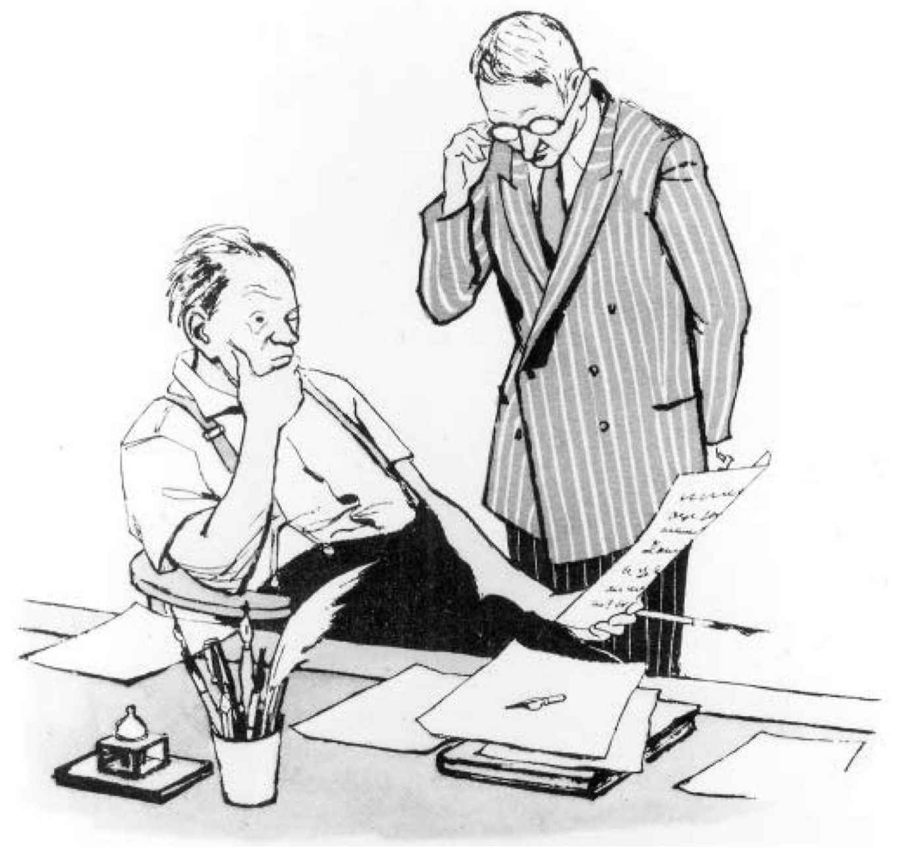

（帕维尔·安年科夫，1858年）
上一章，我们讨论了普希金崇拜的浮夸风气惹得人们把他理解为小丑、游戏者、可与之“散漫溜达”的讨喜熟人，而不是一本正经的倨傲学究。普希金因而成为无意义之意义的使者，这位诗人最重要的作品成了《科隆那的小房子》（1830），这部异装癖厨子的传奇故事古怪离奇，诗人刻意让人不得要领，结尾这样写道：
不过这种轻浮气息并非理解普希金全部作品的关键。他的另一个同样典型的特征是《“纪念碑”》中表达的文学说教观，即作家有责任“激起［整个民族的］善良的感情”。就连《科隆那的小房子》结尾也有说教，即不必把文学太当真。这源于普希金失望地看到俄罗斯读者太计较寓意和教训，在《诗人与群氓》（1828）一诗中，他也强烈地驳斥了那些一听到“歌曲”，就只能以愚蠢的问题应对的人：
在《黑桃皇后》（1834）中，任何一个赌棍故事理应具有的教化雄心都被削弱了，因为这个故事本身就把讲故事和写作说成是不务正业、不可信赖、弄虚作假，不过是“为了跳一支玛祖卡舞而喋喋不休”。
不过道德评说也时有出现。当赫尔曼出现在丽莎的房间，跟她道出自己隔空求爱的真实原因（事实上他给她写那些情意绵绵的信，是为了能够骗到进入这所房子的机会，好与她的监护人伯爵夫人见面），叙述者写道：“她痛哭，揪心地忏悔，悔之晚矣！”如果普希金选择道德中立，他本可以选用不同的措辞（比方说“突然得知真相，十分痛苦”）。但作者让叙述者选用基督教的道德词汇（“忏悔”），而“悔之晚矣”这个词也传递出明确的道德判断（丽莎原是有分寸感的，只是太久以来，她忽略了良知的声音）。同样，毫无疑问，叶甫盖尼·奥涅金与连斯基之间的决斗也将被理解为一种文明所允许的杀人方式，不过这一点是通过一篇关于复仇快感的长篇演讲间接表达的，那篇演讲带着可笑的愤世嫉俗：
把这里的最后一个建议解读为矫情，只为用直率的语言来削弱这一段关于复仇的夸张修辞，未免荒谬。但挖苦的幽默确实遮蔽了一个显而易见的事实，那就是即便杀死敌人，也算不上好事。
不过这类微妙的讽刺有赖于一个不牢靠的金字塔，也就是关于读者可能会作何反应的一套假设。正如尤里·洛特曼所说，在普希金那一代人中，决斗已经开始被看作是“活人祭”了［或者用一个不那么夸张的说法，被看成是一种故作姿态的方式，成年男性这么做是愚昧荒唐的，在莱蒙托夫的《当代英雄》（1841）中，这种解读始终盘旋在毕巧林和他那个冒牌货第二自我格鲁什尼茨基之间的决斗外围，半个世纪后才因契诃夫对决斗的描述而被充分认识］。在人们普遍认为决斗是解决荣誉事务的主要手段的社会里，攻击决斗是不道德的做法或许要表达得更明确一些，才能被读者明白。在18世纪和19世纪初，俄国作家们强烈地感觉到严肃文学（而不是占卜书或教会日历）的读者都属于同一个阵营，即便有些读者对文学的理解没有那么在行，某些基本的评论事实也得有人提醒他们——比如文学跟现实生活不是一回事，以及叙述者跟作者不一定是同一个人。大体而言，这种融合感的原因在于受教育人口的规模较小。
1830年代和1840年代，随着智识生活进一步扩大，影响了来自更广泛社会阶层的人口，特别是来自俄罗斯社会中层的雄心勃勃的外省男性，知识分子共识的观念开始瓦解。第一个表征是文学世界内部的派系之争，特别是普希金这样的贵族作家与文学记者之间的争吵，其中最臭名昭著的记者要属顽固的保守主义者、密探、《北方蜜蜂》的编辑、通俗小说作家法捷·布尔加林。一旦一切知识分子都属于同一圈子的想法消散了，人们也就不再期待他们共同拥有理所当然的道德价值观。这就给通过公开的评说和阐释在文本内部表达共识造成了压力，也给自18世纪末期以来在文学文本中作为反讽源头的直率说教带来了压力。
因此，在普希金自己创造的众多可能的普希金中，那个作为“思想大师”的作家、整个民族的导师，才是他的同代人和紧随其后的继承人心中分量最重的。1834年，别林斯基力图为普希金规定他应该如何写作，抱怨说这位作家已经从《波尔塔瓦》和《鲍里斯·戈杜诺夫》（这是“有着无懈可击的严肃性和对全民族的重要意义”的简略表达）转向了“空洞而毫无生命力的童话”（说这话时，别林斯基脑子里想的居然是普希金对莎士比亚的《一报还一报》的天才缩写《安哲鲁》，这实在令人震惊）。对作家的看法从元文本讽刺家转变为强调其社会责任，尼古拉·果戈理就是一个明显的例子。果戈理的小说《鼻子》（1836）嘲讽了道德教化文学的概念：小说的结尾并不是道德训谕，而是叙述者在试图解释科瓦廖夫少校丢失的鼻子变成一名高级公务员这个趣闻有何意义时，竟语无伦次，最后陷入沉默。然而十年后，果戈理却对作家这个职业有了一套截然不同的观念。在他臭名昭著的文集《与友人书简选》（1847）中，他声称普希金是唯一一个了解《死魂灵》这部小说的崇高道德意旨的读者，并断言：“一个作家的责任不仅是愉悦心灵和品味；如果他的作品不能传播对灵魂有用的东西，不能向读者传达道德训诫，他将为此付出沉重的代价。”虽然果戈理在《与友人书简选》中表达的许多观点都受到了激进派和保守派双方面的抨击（果戈理建议地主在农民面前烧毁钞票，以此来教会后者对财富无动于衷，没有几个人觉得这是对的），但他强调作家有责任传达“道德训诫”却没有遭到质疑。相反，对《与友人书简选》的批评的关键在于，如别林斯基在1847年致果戈理的信中所说，果戈理传递了错误的训谕，因而违背了身为作家的职责。激进派和保守派这时都基于意识形态（ideinost' ），也就是面对重要的热点问题的态度，来评价文学。
当然，意识形态倒也没有在1840年以后一统天下。政治激进的评论家们坚信现实主义小说乃至新闻体报告文学优于抒情诗，这激发诗歌作者反过来质疑文学的功利主义理论。（一个引人注目的例子是莫斯科评论家、“吉卜赛传奇故事”的作者阿波隆·格里戈里耶夫，他是别林斯基、涅克拉索夫、杜勃罗留波夫的劲敌，也是成为史诗级酒鬼的众多俄罗斯作家之一。）19世纪末，俄罗斯颓废派效法其法国同类，主张艺术具有自主性，并坚持私利崇拜（颓废派理想的英雄，无论男女，不会献身社会进步，他们唯一的目的就是追求快乐和感官满足）。
然而把艺术与道德或政治问题截然分开的愿望始终是一个边缘现象，一个有力证据就是托尔斯泰这位19世纪末的大文豪，无论哪个政治阵营的人物都对其充满敬畏的评论家，动用自己的权威抨击了颓废派对美的崇拜。在《艺术论》（1898）中，托尔斯泰强有力地驳斥了唯美主义艺术观，在他看来，艺术的价值应该取决于它是否真诚地表达了情感，是否致力于善的传播。在俄罗斯知识界，民粹主义当道，人们普遍认为知识分子有义务帮助所谓的“普罗大众”，这意味着即便在托尔斯泰抨击的那些“颓废派”中，主张将艺术与政治混为一谈者也要比试图将两者分开者更普遍。1906—1907年期间，短期的“神秘无政府主义”运动就表达了实现现代主义文学、宗教哲学和社会主义大一统的愿望；1917年以后，一批现代主义作家成为布尔什维克主义的热心拥趸，纷纷加入其羽翼未丰的文化机构。举例来说，象征主义诗人瓦列里·勃留索夫就受命负责制订苏联作家培训计划；马雅可夫斯基等左翼先锋派炮制了押韵的宣传词和海报，张贴在莫斯科的罗斯塔（即俄国电报通讯社）的窗口。不过，艺术与政治的相互影响有时也不那么明显。玛琳娜·茨维塔耶娃坚决独立于任何党派路线，这使她在后革命时期的莫斯科、移民到布拉格、后来到巴黎之后都极为不得人心，作为最有天赋和才华的现代主义诗人之一，她在1917年后一再成为被讨伐的对象。她在苏联的莫斯科写过一首向俄国内战期间的反苏维埃势力“白军”致敬的恢弘诗篇《天鹅营》（1921），随后又于1923年，也就是移民到西方世界一年之后，在柏林发表了一篇同样争议巨大的作品，向“赶车的六翼天使”马雅可夫斯基致敬。
许多俄罗斯作家接受艺术和道德伦理可以共存的观念，在一定程度上，这是俄罗斯政府——包括革命前后的历届政府——要把道德和艺术都置于监管之下的野心使然。总的来说，严厉的审查制度和刻意创作道德败坏或浮夸艺术作品的做法之间存在着逆相关：为了开个玩笑而甘冒失去生命或自由风险的作家，才是不世出的好作家。无论如何，跟政治领袖们本人相比，憎恨沙皇和苏联的作家们也不一定对西方“市民社会领域”的自由主义概念深信不疑，什么文化机构与教育和市政环境管理一样，在某些重大方面具有自主性，是“高于政治”的。在19世纪俄罗斯历史的某些时期，正如近期一位历史学家所说，“民主审查制度”（也就是俄罗斯激进评论家和编辑们希望胁迫作者服从政治的愿望）是个“跟官方同类一样需要考虑的因素”。
所有这些表明，声称“俄罗斯经典文学［……］很少公开说教”（引用一位西方俄罗斯历史学家的话）就大错特错了。相反，“公开说教”是俄罗斯经典作家的伟大特长之一。只有蛮横任性的读者才会看不到萨尔蒂科夫–谢德林的《戈洛夫廖夫老爷们》是对农奴主阶级道德沦丧的有力谴责，或者他的《一个城市的历史》是对独裁统治的无情讥讽。重点不是俄罗斯作家避免讲道或典范故事，而是他们的叙述中超乎寻常的修辞笔力。
然而上述第一部小说中古怪猥琐的犹杜什卡·戈洛夫廖夫和第二部小说中声若洪钟的市长乌格留姆·布尔契夫不仅仅是萨尔蒂科夫的意识形态观念的传声筒。无休止地根据文学人物表达的所谓当代弊病对其分类，抹杀叶甫盖尼·奥涅金、毕巧林和安德烈·博尔孔斯基之间的区别，化零为整，简单粗暴地把他们变成一群齐整的“多余的人”的，是文学评论家而非作家。同样，尼古拉·杜勃罗留波夫关于冈察洛夫的小说《奥勃洛莫夫》的评论文章《什么是奥勃洛莫夫性格？》，也把这部小说当成一个关于懒惰和勤奋的寓言故事，而全然忽略了一个事实，即正是无比懒惰和贪吃的奥勃洛莫夫刺激了其创作者的想象力，而不是小说中那位正面主人公、自以为是的斯托尔兹。
跟评论家不同，对作家来说，意识形态和艺术创作这两个目标之间永远存在着张力。作家们频繁地为自己的文学文本撰写序言、后记和注释的做法恰恰表现了俄罗斯文学的“文类间”特征，即它力图弥合虚构与非虚构之间差距的愿望（注意托尔斯泰的《战争与和平》中就插入了真实文献）。但它同时也表明作家们意识到，文学传统令他们无法直白地传达训谕。
关于虚构和意识形态之间的冲突，一个明显的例子就是托尔斯泰晚期的小说《克鲁采奏鸣曲》（1889）。托尔斯泰在小说发表之后为之撰写的《跋》中，支持主人公波兹德内歇夫提出的惊世骇俗的论点，坚称只有绝对禁欲才是符合道德规范的人类生存方式。托尔斯泰还对读者很难抓住这部小说的要旨表示惊愕。不过波兹德内歇夫其人在小说开始的那些章节里一直未停止神经质的抽搐，又喝下一杯杯浓茶以满足自己的咖啡因瘾，很难说能够有力支持他的创造者（托尔斯泰彼时正强烈建议戒除麻醉物质）的这些观点，虽然表面看来，他希望人们重视这些观点。这个人物甚至没有体面地忏悔自己的罪行或对受害者有一丝同情。无论当时还是现在，都很难把这个故事看成一个寓言；把它当作对杀人犯心态的冷峻有力的素描来欣赏就容易得多——此人穿着袜子在自己的家里徘徊，令他的受害者大为吃惊，事后还冷漠地回忆自己的匕首先是刺穿紧身褡，接着又刺到肉的手感。《安娜·卡列尼娜》中也有同样明显的沟通不确定性，那部小说既是关于得体婚姻生活的道德故事，又详细描述了那样的生活有多可怕。这本书把婚姻作为一个方便的出发点，来对凡事 都有意义的俄罗斯社会开启百科全书式的探讨，但同时它又痴迷于生活中的寻常细节，而事实上，细节之美恰在于它没有 意义。
不过米哈伊尔·巴赫金后来在一篇关于陀思妥耶夫斯基的著名研究论文中提出的小说话语的“复调性”，即其中统一可靠的全知视角的缺席，并不一定等同于道德或哲学定论的缺席。果戈理的戏剧《钦差大臣》中的语言鲜活有力，淫猥的俄语口语以其充沛的活力不断冒出，令剧中人物“说话得体”的努力显得不无可悲；与之密切相关的，是果戈理认为这是一部宗教道德剧的观念，他以这部戏剧为实例来说明那些他认为污染了人类灵魂且终将在审判日大白于天下的恶行。在果戈理看来，语言得体与失当是人类同一个过错的两个方面，这过错即想当然地以为可以在神的全见之眼面前隐瞒自己的弱点和缺陷。
如此把“媒介”和“训谕”、说教目的和表现区间难解难分地混在一起，在苏联的一些作品中也时有出现，虽然在苏联时代，一方面国家干预激增，另一方面知识分子也越来越服从。一个恰当的例子是马雅可夫斯基的诗歌。马雅可夫斯基1917年后的作品往往被认为远不及他早期的文学成就，十分可悲——有人指责这位作家“踩住自己歌吟的喉咙”（这是他自己在未完成的临终伟作《放开喉咙歌唱》中使用的说法）。然而不能据此说他与历史脱轨，在文学史上选择了一条小路；要说作品中的说教和艺术密不可分，后期的马雅可夫斯基可是俄罗斯作家中的一个典型。例如，他那首扣人心弦的诗《两个不完全寻常的事件》（1922），就把莫斯科一条街道上饥荒的场景和正在一家饭馆里进行的“瘟疫时期的盛宴”的片段并置起来——饭馆里，作家们和其他知识分子正在享受这个危机四伏的城市中最后一点近似佳肴的东西。总结起来就是这么赤裸裸的几句话，这首诗读来也像洗发水广告中的“前后对比”图，或1920年代游行中使用的反资产阶级宣传条目（骨瘦如柴的流浪者、大腹便便的银行家）一样简略直白。然而上述总结中省略了马雅可夫斯基在描述无声的莫斯科街道时那种怪异恐怖的力量，以及他的开篇意象——那个半人半马的怪物——的震撼效果：
安全的理性很快就重新建立了起来，摆脱了其神话意义的“半人半马”其实是一匹饥饿的老马的头颅，被一个绝望的莫斯科人用匕首把它从瘦骨嶙峋的脖颈上割了下来。然而这个幻象，就像跟它类似的那个噩梦一样，无法被简化为日常生活的一次异常事件，它甚至无法被简单地概括为死亡的暗示。它是无法简化的，是恐惧的表现，那些恐惧通常已被驱离现代城市，但极端时刻仍会不可抑制地升起。
如此说来，《两个不完全寻常的事件》不能作为例证说明想象力屈服于说教目的，而是说明前者与后者密不可分地交织在一起。它诉诸把神话解读为人类经验原型的心理分析方法培养起来的感受力，无疑也同样诉诸一个坚定的布尔什维克主义者认为革命年代的苦难只有通过实现共产主义才能避免的信念。莫斯科街道上那个恐怖的半人半马怪物本是作为一个例证来支持马雅可夫斯基的政治布道的，却获得了自己的艺术生命，甚或还成为对现代主义诗歌的一种隐喻，影射后者是荒谬怪异的混合体。
因此，关于苏联文学的说教主义实属反常的讨论本身，就建立在误解的基础上。其终极出发点是对苏联文学力图动用说教手段实现何种性质的目标反应过激，这也不难理解。到底有无可能把艺术价值与道德节操彻底分开？一首献给苏联秘密警察，或者献给如斯大林这般邪恶、间接害死了数千万人的大独裁者的颂歌，到底有没有任何美学价值，哪怕它的创作者是一个有着无可争议的艺术才华的作家？这些绝不仅仅是假设性问题。
“捷尔任斯基的士兵”事实上是马雅可夫斯基1926年所写的一首颂诗的歌颂对象。而在1930年代中期，社会主义现实主义已经建立起来，对斯大林的官方崇拜经历了全方位发展。希望让自己的作品得到发表的作家就必须展现出党性，即要对党的价值观无限忠诚，包括（1930年代末期以后）阿谀奉承领袖。在无数的诗歌、短篇和长篇小说中，他被写成全体苏联公民的洞视一切的朋友：
这首由亚历山大·苏尔科夫所写的诗歌以任何标准来看都是拙劣的，但确有才华的作家们也对斯大林崇拜做出了回应。例如，曼德尔施塔姆的一首《斯大林颂》，就因其优雅措辞和表达清晰的真挚情感而出类拔萃。
很多加入所谓“第一波”移民潮的评论家（在革命中或革命后不久离开俄国的人），其反对苏联艺术的观念是先入为主的。出色的文学评论家和杰出诗人弗拉季斯拉夫·霍达谢维奇曾说：“马雅可夫斯基从来不是歌颂革命的诗人，也绝不是什么革命诗人。事实上他的修辞是大屠杀式的修辞，将暴力和辱骂指向一切弱者和无力防卫者，不管那弱者是莫斯科的德国香肠铺，还是个被勒紧了喉咙的布尔乔亚。”霍达谢维奇的这段评价本身很难受到指责，但麻烦在于，1917年后俄罗斯出版的文本很少能够满足无条件地支持苏联政权下的受难者这一标准。安娜·阿赫玛托娃的《安魂曲》是为肃反运动（1937—1938年对数百万所谓“人民的敌人”的屠杀）的牺牲者吟咏的哀歌，毫不妥协地公然与施暴者为敌，是致力于无懈可击的道德宗旨的上乘艺术作品。然而这毕竟只是少数。在大多数情况下，陷于数次压制风潮的天才作家们会做出各种形式的道德妥协。拿布尔加科夫的小说《大师和玛格丽特》（1928—1940）来说，他把遭到魔鬼撒旦破坏的1920年代莫斯科的堕落景象与一个“人格化”的耶稣基督并置起来，后者被描述为社交无能的“圣愚”，穿行在跟1930年代的莫斯科有着神秘相似性的耶路撒冷。这部小说的尾声把最后的发言权交给沃兰德，也就是布尔加科夫笔下的梅菲斯特，后者道出了道德相对论的一套准则，“善”和“恶”被分别对应于物质世界的“光明”与“黑暗”，二者都是感觉丰沛的生命必不可少的。至于丹尼尔·哈尔姆斯的那些短篇小说，比方说《偶然事件》（1934—1936），都出色地揭露了1930年代的非人生活，也是在这些文本中，无意义的残酷行径本身成为核心的艺术手段，成为叙述者和读者合谋的欢愉对象。
因此就苏联艺术而言，根本不可能那么容易地说出天赋才华与坚守道德之间有何关系：很多极有才华的作家对暴君的态度是模棱两可的，甚至满怀崇拜。基于其伦理可疑性而把几乎一切作品都看成是糟糕的作品，包括写完即“收入书桌抽屉”的很多作品（布尔加科夫和哈尔姆斯都没有奢望过发表他们后期的作品），而对《大师和玛格丽特》和比方说安娜·卡拉瓦耶娃的三部曲《祖国》（1951）还要区别对待，把它们归入地狱中不同的圈层，因为后者歌颂了在全见全知的斯大林的英明统治下人们美好愉悦的生活——这些都是符合逻辑的反应。然而这样做无异于逆向效仿苏联时代思想狭隘的文化政治，在苏联的统治下，只有具备“共产主义道德”和“进步性”的作品才能流传（见第二章）。这样做还会掩盖苏联艺术家们的道德困境在一定程度上与其他时代和其他社会的艺术家不无相似的事实，正如俄罗斯历史学家鲍里斯·格罗伊斯曾经指出的那样：“历史上，被普遍视为善的艺术常常具有美化和歌颂权力的功能。”如果我们以更广阔的时空维度来考察“美化和歌颂权力”这一传统，不妨把曼德尔施塔姆的《斯大林颂》放在罗蒙诺索夫献给彼得一世89（很难说此人是最仁慈的统治者）的赞歌的背景下去阅读。或者把苏联现实主义小说和第三帝国的小说，20世纪中期法国、意大利和爱尔兰的天主教小说甚或像“禾林言情小说” [26] 及英美侦探小说这类程式化体裁对比阅读，也同样能够得到启发。
另一个立场是无视苏联艺术与政治权力的关系。如果可以抹去陀思妥耶夫斯基在《作家日记》（1876—1881）中如此刺眼的泛斯拉夫弥赛亚主义 [27] 和反犹主义（顺便提一句，这些在他的小说中也显而易见），把他理解为普遍人类自由的预言家，那么把1920年代的马雅可夫斯基看成是不由自主地预言自由的先知也同样合理。在《臭虫》（1928）的最后一幕，全剧从头到尾被当作最糟糕的小资产阶级唯物主义者的代表而遭到嘲笑的工人普利绥坡金，突然变成了一个悲剧人物，在笼子中扭动着，抗议乌托邦未来那种贫瘠刻板的自命不凡，还可以由此推理，说他抗议任何相信将未来拉到眼前便能代表进步的愚蠢社会。
另一种做法是将道德评判彻底悬置起来：苏联文学完全可以从其本身出发进行研究，从人类学角度加以讨论。这样做意味着将“五年计划小说或斯大林颂歌的创作是否具有道德和美学的正当性”这个问题替换为“写这些作品意味着什么，以及与其同时代的读者如何理解这些作品”的问题。卡特琳娜·克拉克关于社会主义现实主义的开拓性研究《苏联小说：作为仪式的历史》首次出版于1981年，指出苏联现实主义所创作的那些说教和程式化小说，事实上是对自我改造的强力神话及忠诚感的表达，这些有助于维系苏联这个紧张不安的新国家。这些小说人物塑造潦草，也很少考虑人物心理的合理性，并且通过克服外部困难来强调进步，这些让它们一方面继承了传统的俄罗斯民间文学的手法，另一方面又与古典史诗结为盟友。最近，戴维·谢泼德、托马斯·拉胡森和约亨·赫尔贝克等其他评论家也分析了苏联现实主义作家自身经历的自我成长的主动进程：他们无论在私人日记还是在公开讲话中，都努力把自己塑造成党性要求的样子，不断重写自己作品的早期版本，为的是让自己跟上政策的变化。这类进程或许不符合关于艺术和道德独立的西方理念，但它们也绝非毫不含糊和易于解读的：斯大林时代的一个主要悲剧就是，有那么多复杂的思考和备受折磨的才智，都被用于创作党的政策要求的那些头脑简单的宣传小说和诗歌了。
无论如何，作家是“思想大师”，这是19世纪和20世纪俄罗斯文学一以贯之的观点。即便像弗拉基米尔·纳博科夫这样一位刻意反讽的现代主义者，也乐于声称自己不是“轻浮的火鸟”，而是“抨击罪恶，谴责愚蠢，嘲笑庸俗和残忍，以及崇尚温柔、才华和骄傲的道德家”。反对意见的形成也是围绕着道德说教和美育的方式以及应该教化哪些内容，而不是围绕着这类教化首先能否被容忍的问题。作家有权利也有义务进行这些教化，这是苏联文学文化政纲的核心之一，在这样的文学文化中，官方赞许的作家不但享有物质特权，也被看成是当时各类热门话题的专家。（一个特别古怪的例子就是，1963年末1964年初，当时年逾六十的苏联杰出诗人帕维尔·安托科尔斯基参加了共产主义青年团的报纸《共青团真理报》举办的主题为“今日青年”的辩论。）官方把作家看成“群众导师”并不意味着该政权反对的那些作家就能逃过这一职责。各类回忆录和信件清楚地表明，像安娜·阿赫玛托娃和约瑟夫·布罗茨基这类边缘作家或受迫害作家也被认为在心理学、道德和美学问题上见解独到。聪慧的国民不光把他们看作是文学文本的庇护者和权威读者，在遇到从绘画、音乐、建筑到日常礼仪、服装和家庭装饰等各类问题时，也会求助于他们的专业眼光。
对作家如此重视，是大量俄国人在苏联时期成为“书写狂”患者的原因之一，这种强迫症的患者都有抑制不住的写作冲动，只要有可能，就会把所写的东西变成铅字，不管有无价值。1920年代的宣传勉励苏联群众勇敢地表达自己（“每个人都能写作！”），受此鼓动，书写狂开始泛滥，一直到苏联政权结束方才停歇。这类书写包括抒情诗和小说，也包括致新闻媒体的信件、前卫作品乃至官方文学。正如流亡作家斯维特兰娜·博伊姆指出的，书写狂让各类官方和非官方“文学机构都很难堪”，因为它提出了关于究竟能以什么为根据来分辨才华的有无这类令人不快的问题。在苏联政权下创作的一些最有创意和极为有趣的小说，都戏剧化地考察了好艺术与坏艺术之间致命的亲密关系。如果说托马斯·曼的《死于威尼斯》中阿申巴赫的天才被视为理所当然，纳博科夫笔下的亨伯特·亨伯特的鉴赏力至少是对真正的艺术家的模仿（虽然他把幻想与生活混为一谈，犯下了致命的错误），那么许多苏联作家–主人公的所谓才华则实在值得怀疑。举例来说，在尤里·奥列沙的小说《嫉妒》（1927）中，两个全然不同但同样含混暧昧的作家人物就是理解力和创造力与寄生依附和意志薄弱的结合体。病态幻想家、自诩为发明家的拙劣命题诗人伊凡·巴比切夫与尼古拉·卡瓦列罗夫比肩，后者有着出色的艺术洞察力（他把鸟儿比作理发剪，把一道伤疤比作被砍掉的树杈上的刀痕），却在小说最后沦为空虚的酒鬼，只会对寡妇阿涅奇卡·普罗科波维奇那张臭虫滋生的花饰大床发发诗兴。
因此，1930年代和1940年代那些更有远见的作家们担忧的，是在制定出版方针时把美学标准最多放在第二位的政体下，一切文学创作或许都会变成书写狂。（这样的担忧并不一定是杞人忧天，奥列沙本人就是一例，他在1930年代中期整日酗酒，陷入绝望，只写过一些支离的碎片。）然而斯大林死后，“书写狂”一词又获得了一种不同的力量，概因人们开始考察斯大林时代的获奖小说，并发现它们有所欠缺，社会主义现实主义本身受到审视。虽然其信条在官方层面一直有效，直到1991年才土崩瓦解，但1956年以后出版的文学就跟社会主义现实主义无关了，即便在1954—1964年“赫鲁晓夫解冻时期”之后那段相对压抑的“停滞时期”（1964—1987）也是如此。苏联文学的未来成为人们热烈辩论的话题，这类辩论偶尔会出现在杂志和公开会议上，但多是些私人谈话。那些公开谈论艺术独立性的优点、“为艺术而艺术”的人可以列举出很多庄重严肃却被遗忘的鸿篇巨制，它们像搁浅的鲸鱼一样散落在艺术的海滩上无人问津。在索尔仁尼琴1950年代和1960年代初创作那些长篇和短篇小说之前，外省报纸上发表了关于地方主义问题的大量文章，那些小说之后又有更激烈的论战文章，这些都为人们指控索尔仁尼琴是翻版的彼得·博博雷金或亚历山大·阿姆菲捷阿特罗夫（这两位都是19世纪末多产的时事小说作家，早已被历史遗忘）火上浇油。
然而支持写作的道德宗旨的人同样有可能提到20世纪早期的先锋派作家阿列克谢·克鲁乔内赫和大卫·布尔柳克，在未来主义手法的创造力枯竭很久之后，这二位的重复性产出仍然在机械地复制那些手法。在安德烈·西尼亚夫斯基1960年的短篇小说《书写迷》中，一些人物充满激情地投身其他体裁的写作，这极其拙劣；然而小说的叙述者，一个官方认可类型的“书写迷”加尔金，写的是一种社会主义现实主义的“数量写作”，似乎至少同样荒唐。《书写迷》中表达的悲观主义后来成了解冻后对93“俄罗斯文学现状”的各类讨论的标准主题。比方说，在《空中灾难》一文中，约瑟夫·布罗茨基就指出，“政治填补的，恰恰是艺术在人们头脑和心灵中留下的真空”，但他对于先锋写作（在他看来，它通过伏特加酒瓶把人们引向了孤立）却跟对政治投入的态度一样尖刻。在《悼念苏联文学》（1990）中，维克多·叶罗费耶夫再次提起这一主题，指出无论是持不同政见者还是官方的苏联作品，有的都不过是狭隘的时事趣味而已。
还好，后斯大林时代的文学，远比这些长篇声讨文字所预言的更加丰富多样和充满活力。的确，有些作家，如长篇和短篇小说作家尤里·特里福诺夫，为寻找“中间道路”，退回到了契诃夫式的现实主义——作者低调隐身，并不断强调文化衰落、道德沦丧。然而“隐形文体”并不是后斯大林时代俄罗斯作家对“中间道路”的唯一解读，甚至不是最受青睐的解读。恰恰相反，与对作家立场的怀疑态度并行的，（和1920年代一样）是强调艺术作品的建构是一个有意识的行为。举例来说，这一点在约瑟夫·布罗茨基的挽诗《1972年》中就显而易见，作者抛弃了“诗人”这个人物而偏爱“语言大师”，他的工作不是“为了赢得声名”，而是“为了我的母语和写作本身”。而它在亚历山大·索尔仁尼琴和瓦尔拉姆·沙拉莫夫等致力于逼真描写真实事件的作家的作品中，也同样不证自明。虽然这两位作家对在劳改营的监禁经历持全然不同的看法（索尔仁尼琴认为，劳改营让他得以展望内心自由和道德复兴，而沙拉莫夫则把它们看作是道德沦丧、幽闭恐怖的“深坑”），但他们都强调写作行为的重要性，在这一点上惊人地相似。在沙拉莫夫的庞大故事集《科雷马故事》（1978）中，《踏雪行》开头的描述事实上不光是在介绍监禁生活，读者也在跟着囚犯们一起跋涉，穿越远北荒原。同时它也在隐喻书写前人从未涉猎的素材，以及打破沉默、重启叙事的行为：
如果说沙拉莫夫在文本一开始就让读者注意到了叙事的问题，那么索尔仁尼琴的小说《第一圈》（1978）和《癌症楼》的开篇则相当传统，没有前言，“开门见山”。不过从文学角度来看，它们仍然是有差异的。《癌症楼》中引用托尔斯泰晚期的短篇小说《人靠什么活着》（1881年，讲述的是一位天使突然降临在一个贫苦的修鞋匠和他的妻子身边），突出表明小说并不仅仅是借描写一家医院来隐喻苏联社会，也是一个专注于庸常生活中的奇妙神迹的文本（这一见解对我们理解这部小说超凡脱俗的最后一章至关重要）。《第一圈》中的一个嵌入叙事——《伊戈尔王子》，就是极致的创造力的例证，这个故事就是为讲述而讲述的，原因恰是它与“现实生活”没有任何直接或间接关系。而《伊凡·杰尼索维奇的一天》（1962）中不断重复着“饱汉不知饿汉饥”，和沙拉莫夫为《科雷马故事》撰写的前言一样，也在提醒人们注意，表现恐怖是根本不可能的。叙事越“真实”，就越不可能与预期的读者充分沟通。这类言论不光是为了让“饱汉”闭嘴思考的修辞策略。在那个任何言论都有可能只留下“唇上说过‘晚安’的印记/再也没有机会对他人说上一句”（引用约瑟夫·布罗茨基的组诗《言辞片段》中一首诗里的话）的时代，它们还对文学的功能提出了质疑。
因此，在后斯大林时代，作家乃“思想大师”的观念在被社会主义现实主义折中之后，便受到了许多聪明的文学评论家和写作者的严重质疑。这些不仅包括被维克多·叶罗费耶夫称为“文学”写作者的沙拉莫夫，也包括据说是“目的论”者的索尔仁尼琴。随着越来越多的人怀疑作家的功能是不是或是否应该是纯说教，小说的地位也开始衰落，这一体裁在斯大林主义盛行的时代最受推崇，恰是因为据称它有足够的能力进行有力的道德评说。（1952年幽默杂志《鳄鱼》刊登过一幅漫画，上面画着两个作家在谈话。作家A对作家B说：“我刚刚想到了一个绝好的主题，可以写成一篇精湛的短篇小说！”作家B说：“嗯，那就把它写下来吧！”作家A：“不，现在的问题在于我想不出怎么把它扩充成一部长篇！”）（图14）
然而在后斯大林时代，这样一种道德说教在左、小说在右的折中立场在西方却没有得到充分的理解。许多西方读者希望俄罗斯作家为他们提供直接无反讽的伦理问题讨论，全然不管第二次世界大战后这些在西方早已过时。在1950年代末的许多评论家看来，比起英语世界近期的任何出版物，鲍里斯·帕斯捷尔纳克的《日瓦戈医生》（1957）分量要重得多，而索尔仁尼琴的《伊凡·杰尼索维奇的一天》叙述的权威性让人想起陀思妥耶夫斯基关于劳改营的回忆录《死屋手记》（1861—1862）。如果说纳博科夫希望托尔斯泰把注意力全都放在安娜·卡列尼娜脑后那一绺松松的鬈发上的话，自《安娜·卡列尼娜》出版以来，许多读者更关心的是这部小说核心的道德主题：是否应该不惜让他人受苦来追求个人的幸福，或者世间到底有没有无法避免或应受的苦难。他们期待着托尔斯泰的继承者们为他们提供这类伦理刺激。第一个由西方投资者资助在俄罗斯设立的文学奖是布克奖，此事绝非偶然，它源于人们想要在俄罗斯大地上复兴小说这一文体的堂吉诃德式臆想，许多人至今仍然认为那里是小说诞生的故乡。

图14 尤·戈罗霍夫绘制的两位作家的漫画